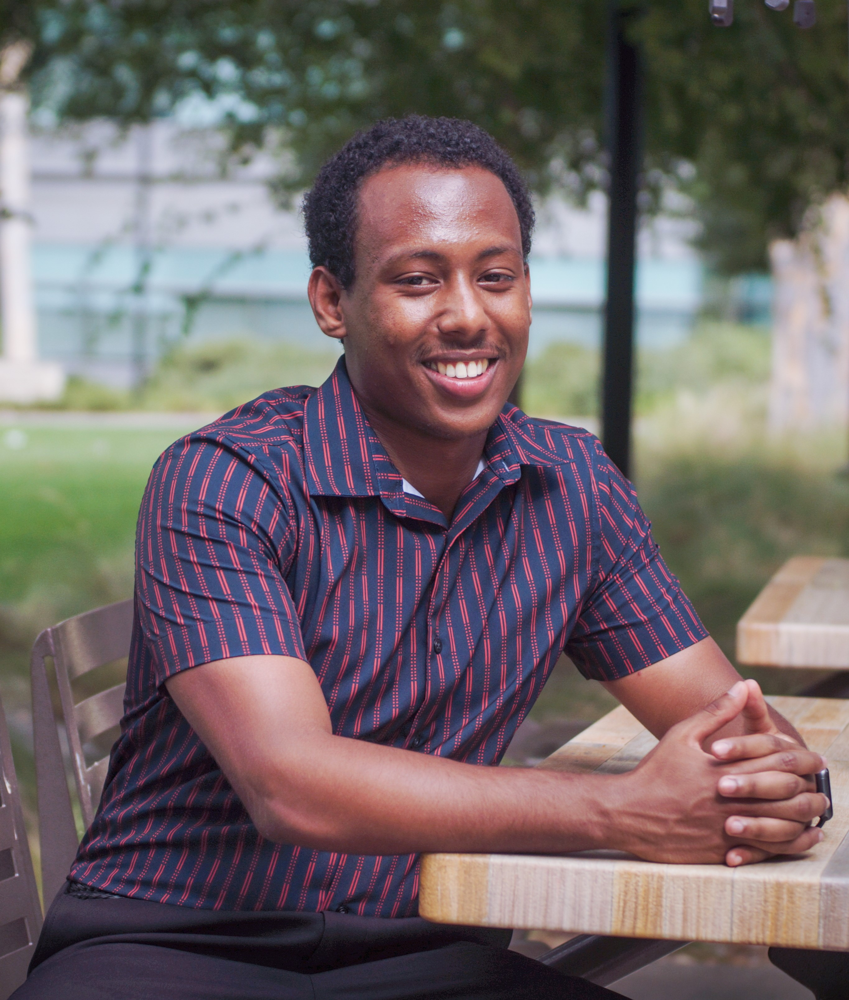
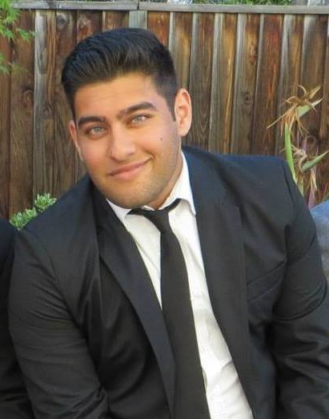

Principal Investigator (PI)
Software Engineer. Biomedical Researcher. National nonprofit leader.
Ben brings proven senior management experience at the intersection of business development, academic research, technology entrepreneurship and nonprofit management.
As a biomedical researcher, Ben worked in 7 research centers across UC San Diego and Harvard Medical School. In the healthcare sector, he has served as a Product Manager, Data Governance Specialist and Mobile Applications Developer. He leads the engineering of new digital health projects at UCSD Health and serves as an active Principal Investigator (PI) to clinically-validate these new services.
Research interests: Design, built and clinically-validate therapeutic software to lower patient's length of stay (LOS), 30-day readmissions and surgical complication rates. Exploring topics in digital health, predictive modeling, behavioral change and social determinants of health.
Nonprofit leader. Ben is Executive Director of SENDforC Inc. (www.sendforc.org) -- a teaching organization he has built over the past 5 years. Over 90 personnel report to him. SENDforC has been named one of the Top 20 Student-Driven Initiatives in the Nation for “Building a Sustainable Community” by the Ford C3 program and received other honors from Ashoka, NASA, AAMC, UCSD Health, Jacobs School of Engineering and other programs. Ben understands how to train, onboard, delegate and recruit in order to construct high-performing, high-morale and sustainable organizations.
Educator. Other teaching experiences include co-founding the UCSD Startup Class at Rady School of Management, teaching at San Diego high schools during his Education Studies Minor, doing educational policy research and founding outreach programs.
Technology CEO. In November 2017, Benyam Alemu and Mike Reid co-founded the health technology firm, Theravision Health Informatics. They have worked with the senior leadership of hospitals over the past 2 years to immerse themselves in healthcare practice and design innovative programs such as ArtWalk to that focus on mission-critical clinical and business needs.
Ben has served on the UC San Diego Changemaker Steering Committee, selected to the National Science Foundation Innovation Corps, awarded the Westly Prize for Young Innovators of California (named a Top 10 Californian under the age of 28) and most recently, was awarded the top civilian award and a commemorative plaque from his hometown - the City of Downey, Mayor’s DNA award.
Ben aims to spend his next several decades building influential communities and companies that bring knowledge leadership and moral leadership to the world’s most pressing social issues.
Applied Scientist
Researcher building novel machine learning (ML) architectures.
Harsh has a background in Cognitive Science and is currently completing graduate studies in both Computer Science and Biology (2 M.S. programs), where he researches advanced topics in theoretical and applied machine learning.
His work is focused on Neural Architecture Search, Bayesian AutoML, Human in the Loop ML, predictive learning systems and generative models for disentagled representations.
Harsh is currently a researcher at Harvard University focusing on Neuroscience-based Machine Learning. Previously, Harsh started Progress, working with the MIT Media Lab to bring together a cross disciplinary team of professors and students to curate and publish findings in the fields of neuroscience, computer science, and engineering. He is also a top writer in the fields of Artificial Intelligence and Entrepreneurship on Medium.
More recently, Harsh co-founded ModelDepot (modeldepot.io) a marketplace for researchers and ML engineers to find and use cutting edge machine learning models, serving thousands of engineers every month. Harsh also recently received the Pioneer Grant (pioneer.app) an award for exceptional technologists, researchers, and artists.
Professionally, Harsh has worked as a Product Manager, leading a HIPAA compliant Doctor-Patient communication and EHR application to market both domestically and internationally, and has also worked in financial data science, building machine learning models to fit to anonymized financial data.